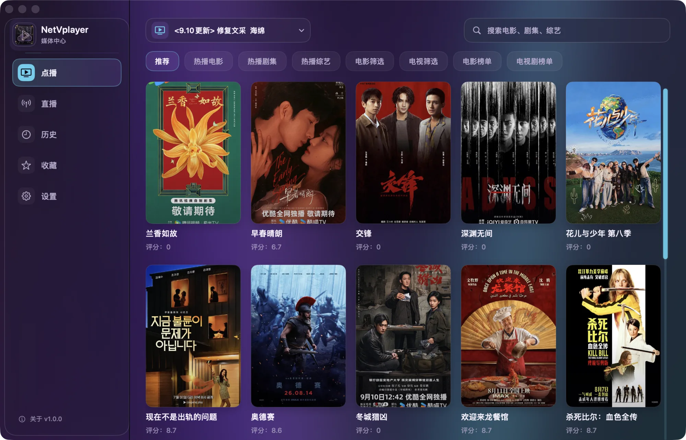
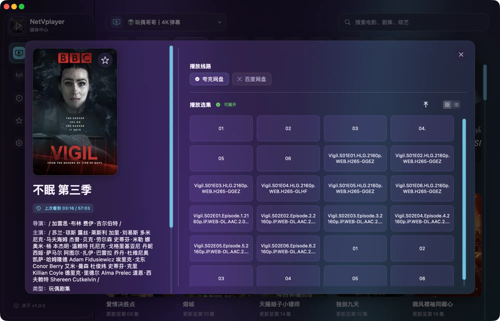
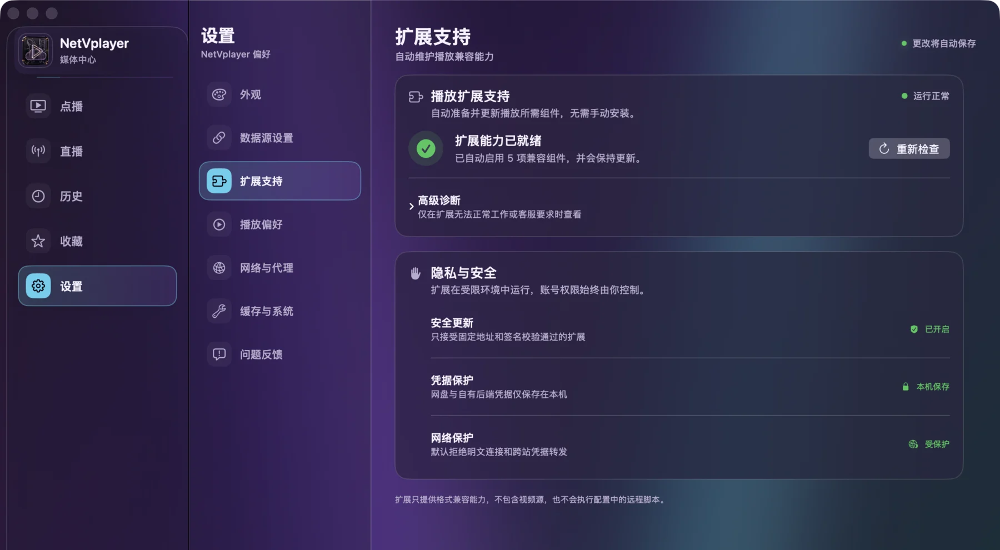

原生 macOS 媒体播放器
NetVplayer
你的内容，你的 Mac，你的播放方式
基于 SwiftUI 与内嵌 libmpv，为 Apple Silicon 打造。只连接你选择并有权访问的内容来源。
版本 1.0.11 · macOS 14+ · Apple Silicon

项目背景
Android 上很熟悉，
Mac 上却总差一个顺手的选择。
FongMi/TV、OK影视、影视仓、TVBox 等常用工具主要服务 Android 生态。我一直没有找到符合自己使用习惯的 macOS 版本，于是从 SwiftUI 与 libmpv 开始，写了 NetVplayer。
目标不是照搬手机或电视端界面，而是把内容浏览、搜索、选集、点播和直播重新组织成一套原生 Mac 桌面体验。
NetVplayer 不是上述项目的官方 Mac 版，与它们不存在隶属或官方合作关系。项目感谢 FongMi/TV 等开源实践提供的兼容性参考，并保持独立的 Swift/macOS 实现。
- 原生界面
- SwiftUI
- 播放核心
- libmpv
- 项目形态
- MIT 开源
完整观看体验
从发现，到播放，再到直播。
详情、选集、搜索和直播都使用原生 macOS 交互。libmpv 负责稳定播放，字幕、音轨、倍速与画面比例保持清晰直接。

- 详情与选集多线路、网盘目录与剧集排序集中呈现。
- 点播与直播独立窗口、完整控制与频道快速切换。
- 跨来源搜索只检索你已经连接并选择的内容来源。
用户自有内容
你的媒体入口，由你决定。
公开应用不内置视频目录、直播列表、站点 Provider、账号或默认源地址。添加你自己的兼容配置、WebDAV、AList/OpenList 或受支持云盘，构建属于自己的媒体空间。
- 兼容配置加载你自己的配置并恢复上次选择。
- 文件与云盘连接 WebDAV、AList/OpenList 与受支持云盘。
- 直播与节目单支持常见直播列表、频道分组与节目指南。
NetVplayer 提供播放与连接能力；内容来源、访问权限和服务账号始终由用户自行管理。
个性化主题
多种外观，同一套原生体验。
从明亮通透到沉浸深色，14 种主题统一覆盖背景、侧栏、控件与强调色，选择会自动保存。
小白安装
从下载，到第一次看到内容。
当前正式版本适用于 macOS 14 或更高版本和 Apple Silicon。安装、首次放行与配置入口都集中在下面。
- 系统
- macOS 14+
- 芯片
- Apple Silicon
- 当前版本
- 1.0.11
-
01
下载 arm64 安装包
从项目官网或最新 Release 下载名称中包含
macos-arm64.zip的文件。 -
02
解压并移入“应用程序”
双击 ZIP，得到
NetVplayer.app，再拖入 macOS“应用程序”文件夹。 -
03
首次启动使用右键“打开”
当前版本使用社区 ad-hoc 签名。若仍被拦截，请到“系统设置 → 隐私与安全性”确认应用名称后选择“仍要打开”。

扩展支持
第一次准备扩展，需要能连接 GitHub。
应用会自动下载并验证播放所需组件。首次准备和后续更新期间，网络需要能够正常连接 GitHub；如果无法访问，下载或更新就不能完成。
组件下载并通过验证后，应用会先启用本机组件并恢复已保存的数据源，更新检查在后台进行。离线时仍可使用已安装且有效的组件；首次准备失败时，可在这里选择“重新检查”。
第一次使用
空白首页是正常状态。
等待“扩展支持”显示就绪，然后进入“设置 → 数据源设置”，填写你自己有权使用的兼容配置。看到加载成功后返回首页，即可开始浏览和播放。
安全扩展
每一次安装，都经过完整验证链。
扩展包只从固定 HTTPS 索引获取。下载、兼容性判断与启动之间设置多重校验，让未经授权或不符合声明的内容更难进入运行环境。
- 01固定 HTTPS 索引只读取预设安全入口
- 02索引签名确认发布清单未被替换
- 03归档哈希核对下载内容完整性
- 04Manifest 签名验证扩展声明来源
- 05兼容性检查协议、App、macOS 与架构
- 06资源与沙盒核对声明资源并隔离启动
- 07吊销状态阻止已撤销版本继续运行
隐私边界
NetVplayer 不提供公共账号体系，也不要求使用预置媒体服务。你选择连接什么、使用什么凭据、访问哪些内容，由你自行决定并承担相应权限责任。
常见问题
安装前后，常见问题一次说明。
这里解释系统要求、内容来源、扩展更新、隐私边界和项目关系。
支持 Intel Mac 吗？
当前不支持。公开版本只提供 Apple Silicon arm64 构建，需要 Apple M 系列芯片。
为什么第一次打开会被 macOS 拦截？
当前版本使用社区 ad-hoc 签名，没有使用 Apple Developer ID 公证。请确认应用名称和下载来源，再通过 Finder 右键“打开”或“隐私与安全性”完成首次放行。
软件自带视频源或直播列表吗？
不自带。公开应用不内置、不提供也不托管视频源、直播列表、账号或媒体内容。
配置地址从哪里获得？
请使用你自己维护、购买或明确获得授权的内容服务。项目不提供、推荐或代找视频源地址。
播放扩展需要手动安装吗？
正常情况下不需要。首次准备或后续更新时，网络必须能连接 GitHub，否则下载与更新无法完成。已经安装并验证通过的组件在离线时仍可继续使用；状态异常时可在“设置 → 扩展支持”中选择“重新检查”。
配置和授权凭据保存在哪里？
配置与授权凭据只保存在本机。非敏感备份不会包含云盘 Token、Cookie 等授权信息。
这是 FongMi、影视仓或 TVBox 的官方 Mac 版吗？
不是。NetVplayer 是独立的 Swift/macOS 实现，与这些项目不存在隶属或官方合作关系。
如何更新应用？
1.0.9 及更新版本会在侧栏和设置页的版本号旁提示新版。点击版本号并确认“更新”后，应用在后台下载和校验，正常退出后安装，下次启动使用新版。1.0.8 及更早版本需先手动安装最新版。
可以关闭自动诊断吗？
可以。在“设置 → 问题反馈 → 自动诊断”中关闭。正式版默认发送经过隐私过滤的崩溃堆栈、版本、固定数字错误维度和有限恢复步骤，并对起播耗时进行 5% 采样；可恢复故障不会单独创建问题。账号凭据、媒体名称、播放地址、原始错误正文和完整日志都不会发送。
遇到问题如何反馈？
可以使用应用内“问题反馈”生成脱敏信息并描述复现步骤。不要公开账号、Token、Cookie 或完整配置地址。
开放构建
看得见的代码，参与得了的未来。
NetVplayer 以 MIT License 开源，使用 SwiftUI 构建 macOS 原生体验，并将 libmpv 集成到应用内部。你可以阅读实现、提交问题、讨论改进或贡献代码。
- 界面
- SwiftUI
- 播放核心
- libmpv
- 系统要求
- macOS 14+ · Apple Silicon
- 许可证
- MIT License